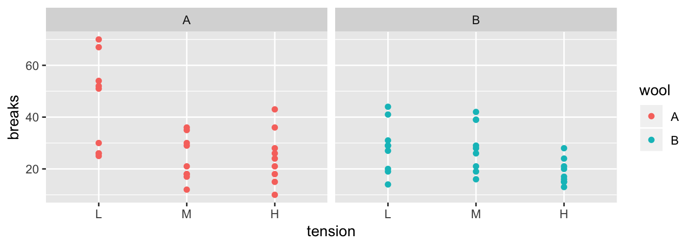

Chapter 2 Introduction to Data Frames
# Load my favorite packages: dplyr, ggplot2, forcats, readr, and stringr
library(tidyverse) ## ── Attaching packages ─────────────────────────────────────────────────────── tidyverse 1.2.1 ──## ✔ ggplot2 3.1.1 ✔ purrr 0.3.2
## ✔ tibble 2.1.1 ✔ dplyr 0.8.0.1
## ✔ tidyr 0.8.3 ✔ stringr 1.4.0
## ✔ readr 1.3.1 ✔ forcats 0.4.0## ── Conflicts ────────────────────────────────────────────────────────── tidyverse_conflicts() ──
## ✖ dplyr::filter() masks stats::filter()
## ✖ dplyr::lag() masks stats::lag()Data frames are the fundamental unit of data storage that casual users of R need to work with. Conceptually they are just like a single tab in a spreadsheet (e.g. Excel) file. There are multiple rows and columns and each column is of the same type of information (e.g. numerical values, dates, or character strings) and each row represents a single observation.
Because the columns have meaning and we generally give them column names, it is desirable to want to access an element by the name of the column as opposed to the column number. While writing formulas in large Excel spreadsheets I often get annoyed trying to remember which column something was in and muttering “Was total biomass in column P or Q?” A system where I could just name the column Total_Biomass and then always refer to it that way, is much nicer to work with and I make fewer dumb mistakes.
In this chapter we will briefly cover the minimal set of tools for working with data frames. First we discuss how to import data sets, both packages from packages and from appropriately formated Excel and .csv files. Next we’ll create new columns based on some calculation, and finally we’ll look at how to summarize information across rows.
2.1 Introduction to Importing Data
2.1.1 From a Package
For many students, they will be assigned homework that utilizes data sets that are stored in some package. To access those, we would need to first install the package if we haven’t already. Recall to do that, we can use the Rstudio menu bar “Tools -> Install Packages…” mouse action.
Because we might have thousands of packages installed on a computer, and those packages might all have data sets associated with them, they aren’t loaded into memory by default. Instead we have to go through a two-step process of making sure that the package is installed on the computer, and then load the desired data set into the running session of R. Once the package is intalled, we can load the data into our session via the following command:
data('alfalfa', package='faraway') # load the data set 'alfalfa' from the package 'faraway'Because R tries to avoid loading datasets until it is sure that you need them, the object alfalfa isn’t initially loaded as a data.frame but rather as a “promise” that it eventually will be loaded whenever you first use it. So lets first access it by viewing it.
View(alfalfa)There are two ways to enter the view command. Either executing the View() function from the console, or clicking on either the white table or the object name in the Environment tab.
# Show the image of the environment tab with the white table highlighted2.1.2 Import from .csv or .xls files
Often times data is stored in a “Comma Separated Values” file (with the file suffix of .csv) where the rows in the file represent the data frame rows, and the columns are just separated by commas. The first row of the file is usually the column titles.
Alternatively, the data might be stored in an Excel file and we just need to tell R where the file is and which worksheet tab to import.
The hardest part for people that are new to programming is giving the path to the data file. In this case, I recommend students use the data import wizard that RStudio includes which is accessed via ‘File -> Import Dataset’. This will then give you a choice of file types to read from (.csv files are in the “Text” options). Once you have selected the file type to import, the user is presented with a file browser window where the desired file should be located. Once the file is chosen, we can import of the file.
Critically, we should notice that the import wizard generates R code that does the actual import. We MUST copy that code into our Rmarkdown file or else the import won’t happen when we try to knit the Rmarkdown into an output document because knitting always occurs in a completely fresh R session. So only use the import wizard to generate the import code! The code generated by the import wizard ends with a View() command and I typically remove that as it can interfer with the knitting process.
2.2 Data Frame Manipulation
Many of the tools to manipulate data frames in R were written without a consistent syntax and are difficult use together. To remedy this, Hadley Wickham (the writer of ggplot2) introduced a package called plyr which was quite useful. As with many projects, his first version was good but not great and he introduced an improved version that works exclusively with data.frames called dplyr which we will investigate. The package dplyr strives to provide a convenient and consistent set of functions to handle the most common data frame manipulations and a mechanism for chaining these operations together to perform complex tasks.
The Dr Wickham has put together a very nice introduction to the package that explains in more detail how the various pieces work and I encourage you to read it at some point. [http://cran.rstudio.com/web/packages/dplyr/vignettes/introduction.html].
One of the aspects about the data.frame object is that R does some simplification for you, but it does not do it in a consistent manner. Somewhat obnoxiously character strings are always converted to factors and subsetting might return a data.frame or a vector or a scalar. This is fine at the command line, but can be problematic when programming. Furthermore, many operations are pretty slow using data.frame. To get around this, Dr Wickham introduced a modified version of the data.frame called a tibble. A tibble is a data.frame but with a few extra bits. For now we can ignore the differences.
The pipe command %>% allows for very readable code. The idea is that the %>% operator works by translating the command a %>% f(b) to the expression f(a,b). This operator works on any function and was introduced in the magrittr package. The beauty of this comes when you have a suite of functions that takes input arguments of the same type as their output.
For example, if we wanted to start with x, and first apply function f(), then g(), and then h(), the usual R command would be h(g(f(x))) which is hard to read because you have to start reading at the innermost set of parentheses. Using the pipe command %>%, this sequence of operations becomes x %>% f() %>% g() %>% h().
| Written | Meaning |
|---|---|
a %>% f(b) |
f(a,b) |
b %>% f(a, .) |
f(a, b) |
x %>% f() %>% g() |
g( f(x) ) |
In dplyr, all the functions below take a data set as its first argument and outputs an appropriately modified data set. This will allow me to chain together commands in a readable fashion. The pipe command works with any function, not just the dplyr functions and I often find myself using it all over the place.
2.2.1 Verbs
The foundational operations to perform on a data set are:
Subsetting - Returns a with only particular columns or rows
–
select- Selecting a subset of columns by name or column number.–
filter- Selecting a subset of rows from a data frame based on logical expressions.–
slice- Selecting a subset of rows by row number.arrange- Re-ordering the rows of a data frame.mutate- Add a new column that is some function of other columns.summarise- calculate some summary statistic of a column of data. This collapses a set of rows into a single row.
Each of these operations is a function in the package dplyr. These functions all have a similar calling syntax, the first argument is a data set, subsequent arguments describe what to do with the input data frame and you can refer to the columns without using the df$column notation. All of these functions will return a data set.
2.2.1.1 Subsetting with select, filter, and slice
These function allows you select certain columns and rows of a data frame.
2.2.1.1.1 select()
Often you only want to work with a small number of columns of a data frame and want to be able to select a subset of columns or perhaps remove a subset. The function to do that is dplyr::select()
# Create a tiny data frame that is easy to see what is happening
grades <- data.frame(
l.name = c('Cox', 'Dorian', 'Kelso', 'Turk'),
Exam1 = c(93, 89, 80, 70),
Exam2 = c(98, 70, 82, 85),
Final = c(96, 85, 81, 92) )
grades## l.name Exam1 Exam2 Final
## 1 Cox 93 98 96
## 2 Dorian 89 70 85
## 3 Kelso 80 82 81
## 4 Turk 70 85 92I could select the columns Exam columns by hand, or by using an extension of the : operator
# select( grades, Exam1, Exam2 ) # from `grades`, select columns Exam1, Exam2
grades %>% select( Exam1, Exam2 ) # Exam1 and Exam2## Exam1 Exam2
## 1 93 98
## 2 89 70
## 3 80 82
## 4 70 85grades %>% select( Exam1:Final ) # Columns Exam1 through Final## Exam1 Exam2 Final
## 1 93 98 96
## 2 89 70 85
## 3 80 82 81
## 4 70 85 92grades %>% select( -Exam1 ) # Negative indexing by name drops a column## l.name Exam2 Final
## 1 Cox 98 96
## 2 Dorian 70 85
## 3 Kelso 82 81
## 4 Turk 85 92grades %>% select( 1:2 ) # Can select column by column position## l.name Exam1
## 1 Cox 93
## 2 Dorian 89
## 3 Kelso 80
## 4 Turk 70The select() command has a few other tricks. There are functional calls that describe the columns you wish to select that take advantage of pattern matching. I generally can get by with starts_with(), ends_with(), and contains(), but there is a final operator matches() that takes a regular expression.
grades %>% select( starts_with('Exam') ) # Exam1 and Exam2## Exam1 Exam2
## 1 93 98
## 2 89 70
## 3 80 82
## 4 70 85The dplyr::select function is quite handy, but there are several other packages out there that have a select function and we can get into trouble with loading other packages with the same function names. If I encounter the select function behaving in a weird manner or complaining about an input argument, my first remedy is to be explicit about it is the dplyr::select() function by appending the package name at the start.
2.2.1.1.2 filter()
It is common to want to select particular rows where we have some logical expression to pick the rows.
# select students with Final grades greater than 90
grades %>% filter(Final > 90)## l.name Exam1 Exam2 Final
## 1 Cox 93 98 96
## 2 Turk 70 85 92You can have multiple logical expressions to select rows and they will be logically combined so that only rows that satisfy all of the conditions are selected. The logicals are joined together using & (and) operator or the | (or) operator and you may explicitly use other logicals. For example a factor column type might be used to select rows where type is either one or two via the following: type==1 | type==2.
# select students with Final grades above 90 and
# average score also above 90
grades %>% filter(Exam2 > 90, Final > 90)## l.name Exam1 Exam2 Final
## 1 Cox 93 98 96# we could also use an "and" condition
grades %>% filter(Exam2 > 90 & Final > 90)## l.name Exam1 Exam2 Final
## 1 Cox 93 98 962.2.1.1.3 slice()
When you want to filter rows based on row number, this is called slicing.
# grab the first 2 rows
grades %>% slice(1:2)## l.name Exam1 Exam2 Final
## 1 Cox 93 98 96
## 2 Dorian 89 70 852.2.1.2 arrange()
We often need to re-order the rows of a data frame. For example, we might wish to take our grade book and sort the rows by the average score, or perhaps alphabetically. The arrange() function does exactly that. The first argument is the data frame to re-order, and the subsequent arguments are the columns to sort on. The order of the sorting column determines the precedent… the first sorting column is first used and the second sorting column is only used to break ties.
grades %>% arrange(l.name)## l.name Exam1 Exam2 Final
## 1 Cox 93 98 96
## 2 Dorian 89 70 85
## 3 Kelso 80 82 81
## 4 Turk 70 85 92The default sorting is in ascending order, so to sort the grades with the highest scoring person in the first row, we must tell arrange to do it in descending order using desc(column.name).
grades %>% arrange(desc(Final))## l.name Exam1 Exam2 Final
## 1 Cox 93 98 96
## 2 Turk 70 85 92
## 3 Dorian 89 70 85
## 4 Kelso 80 82 81In a more complicated example, consider the following data and we want to order it first by Treatment Level and secondarily by the y-value. I want the Treatment level in the default ascending order (Low, Medium, High), but the y variable in descending order.
# make some data
dd <- data.frame(
Trt = factor(c("High", "Med", "High", "Low"),
levels = c("Low", "Med", "High")),
y = c(8, 3, 9, 9),
z = c(1, 1, 1, 2))
dd## Trt y z
## 1 High 8 1
## 2 Med 3 1
## 3 High 9 1
## 4 Low 9 2# arrange the rows first by treatment, and then by y (y in descending order)
dd %>% arrange(Trt, desc(y))## Trt y z
## 1 Low 9 2
## 2 Med 3 1
## 3 High 9 1
## 4 High 8 12.2.1.3 mutate()
I often need to create a new column that is some function of the old columns. In the dplyr package, this is a mutate command. To do ths, we give a mutate( NewColumn = Function of Old Columns ) command.
# Modify the grades data frame and replace the old version with the new
# that contains the newly created "average" column
grades <- grades %>%
mutate( average = (Exam1 + Exam2 + Final)/3 )You can do multiple calculations within the same mutate() command, and you can even refer to columns that were created in the same mutate() command.
grades %>% mutate(
average = (Exam1 + Exam2 + Final)/3,
grade = cut(average, c(0, 60, 70, 80, 90, 100), # cut takes numeric variable
c( 'F','D','C','B','A')) ) # and makes a factor## l.name Exam1 Exam2 Final average grade
## 1 Cox 93 98 96 95.66667 A
## 2 Dorian 89 70 85 81.33333 B
## 3 Kelso 80 82 81 81.00000 B
## 4 Turk 70 85 92 82.33333 B2.2.1.4 summarise()
By itself, this function is quite boring, but will become useful later on. Its purpose is to calculate summary statistics using any or all of the data columns. Notice that we get to chose the name of the new column. The way to think about this is that we are collapsing information stored in multiple rows into a single row of values.
# calculate the mean of exam 1
grades %>% summarise( mean.E1=mean(Exam1) )## mean.E1
## 1 83We could calculate multiple summary statistics if we like.
# calculate the mean and standard deviation
grades %>% summarise( mean.E1=mean(Exam1), stddev.E1=sd(Exam1) )## mean.E1 stddev.E1
## 1 83 10.23067If we want to apply the same statistic to each column, we use the summarise_all() command. We have to be a little careful here because the function you use has to work on every column (that isn’t part of the grouping structure (see group_by())). There are two variants summarize_at() and summarize_if() that give you a bit more flexibility.
# calculate the mean and standard devation of each of the score
# columns. Notice I have a funny way of specifying the functions
# mean() and sd() that I want to use.
grades %>%
select( Exam1:Final ) %>%
summarise_all( list( ~mean , ~sd) )## Exam1_mean Exam2_mean Final_mean Exam1_sd Exam2_sd Final_sd
## 1 83 83.75 88.5 10.23067 11.5 6.757712grades %>%
summarise_if(is.numeric, list( ~mean , ~sd) )## Exam1_mean Exam2_mean Final_mean average_mean Exam1_sd Exam2_sd Final_sd
## 1 83 83.75 88.5 85.08333 10.23067 11.5 6.757712
## average_sd
## 1 7.0782662.2.1.5 Miscellaneous functions
There are some more function that are useful but aren’t as commonly used. For sampling the functions sample_n() and sample_frac() will take a sub-sample of either n rows or of a fraction of the data set. The function n() returns the number of rows in the data set. Finally rename() will rename a selected column.
2.2.2 Split, apply, combine
Aside from unifying the syntax behind the common operations, the major strength of the dplyr package is the ability to split a data frame into a bunch of sub-data frames, apply a sequence of one or more of the operations we just described, and then combine results back together. We’ll consider data from an experiment from spinning wool into yarn. This experiment considered two different types of wool (A or B) and three different levels of tension on the thread. The response variable is the number of breaks in the resulting yarn. For each of the 6 wool:tension combinations, there are 9 replicated observations per wool:tension level.
data(warpbreaks)
str(warpbreaks)## 'data.frame': 54 obs. of 3 variables:
## $ breaks : num 26 30 54 25 70 52 51 26 67 18 ...
## $ wool : Factor w/ 2 levels "A","B": 1 1 1 1 1 1 1 1 1 1 ...
## $ tension: Factor w/ 3 levels "L","M","H": 1 1 1 1 1 1 1 1 1 2 ...
The first we must do is to create a data frame with additional information about how to break the data into sub-data frames. In this case, I want to break the data up into the 6 wool-by-tension combinations. Initially we will just figure out how many rows are in each wool-by-tension combination.
# group_by: what variable(s) shall we group on.
# n() is a function that returns how many rows are in the
# currently selected sub-dataframe
warpbreaks %>%
group_by( wool, tension) %>% # grouping
summarise(n = n() ) # how many in each group## # A tibble: 6 x 3
## # Groups: wool [2]
## wool tension n
## <fct> <fct> <int>
## 1 A L 9
## 2 A M 9
## 3 A H 9
## 4 B L 9
## 5 B M 9
## 6 B H 9The group_by function takes a data.frame and returns the same data.frame, but with some extra information so that any subsequent function acts on each unique combination defined in the group_by. If you wish to remove this behavior, use group_by() to reset the grouping to have no grouping variable.
Using the same summarise function, we could calculate the group mean and standard deviation for each wool-by-tension group.
warpbreaks %>%
group_by(wool, tension) %>%
summarise( n = n(), # I added some formatting to show the
mean.breaks = mean(breaks), # reader I am calculating several
sd.breaks = sd(breaks)) # statistics.## # A tibble: 6 x 5
## # Groups: wool [2]
## wool tension n mean.breaks sd.breaks
## <fct> <fct> <int> <dbl> <dbl>
## 1 A L 9 44.6 18.1
## 2 A M 9 24 8.66
## 3 A H 9 24.6 10.3
## 4 B L 9 28.2 9.86
## 5 B M 9 28.8 9.43
## 6 B H 9 18.8 4.89If instead of summarizing each split, we might want to just do some calculation and the output should have the same number of rows as the input data frame. In this case I’ll tell dplyr that we are mutating the data frame instead of summarizing it. For example, suppose that I want to calculate the residual value \[e_{ijk}=y_{ijk}-\bar{y}_{ij\cdot}\] where \(\bar{y}_{ij\cdot}\) is the mean of each wool:tension combination.
warpbreaks %>%
group_by(wool, tension) %>% # group by wool:tension
mutate(resid = breaks - mean(breaks)) %>% # mean(breaks) of the group!
head( ) # show the first couple of rows## # A tibble: 6 x 4
## # Groups: wool, tension [1]
## breaks wool tension resid
## <dbl> <fct> <fct> <dbl>
## 1 26 A L -18.6
## 2 30 A L -14.6
## 3 54 A L 9.44
## 4 25 A L -19.6
## 5 70 A L 25.4
## 6 52 A L 7.442.2.3 Chaining commands together
In the previous examples we have used the %>% operator to make the code more readable but to really appreciate this, we should examine the alternative.
Suppose we have the results of a small 5K race. The data given to us is in the order that the runners signed up but we want to calculate the results for each gender, calculate the placings, and the sort the data frame by gender and then place. We can think of this process as having three steps:
- Splitting
- Ranking
- Re-arranging.
# input the initial data
race.results <- data.frame(
name=c('Bob', 'Jeff', 'Rachel', 'Bonnie', 'Derek', 'April','Elise','David'),
time=c(21.23, 19.51, 19.52, 23.45, 20.23, 24.22, 28.33, 15.48),
gender=c('M','M','F','F','M','F','F','M'))We could run all the commands together using the following code:
arrange(
mutate(
group_by(
race.results, # using race.results
gender), # group by gender
place = rank( time )), # mutate to calculate the place column
gender, place) # arrange the result by gender and place## # A tibble: 8 x 4
## # Groups: gender [2]
## name time gender place
## <fct> <dbl> <fct> <dbl>
## 1 Rachel 19.5 F 1
## 2 Bonnie 23.4 F 2
## 3 April 24.2 F 3
## 4 Elise 28.3 F 4
## 5 David 15.5 M 1
## 6 Jeff 19.5 M 2
## 7 Derek 20.2 M 3
## 8 Bob 21.2 M 4This is very difficult to read because you have to read the code from the inside out.
Another (and slightly more readable) way to complete our task is to save each intermediate step of our process and then use that in the next step:
temp.df0 <- race.results %>% group_by( gender)
temp.df1 <- temp.df0 %>% mutate( place = rank(time) )
temp.df2 <- temp.df1 %>% arrange( gender, place )It would be nice if I didn’t have to save all these intermediate results because keeping track of temp1 and temp2 gets pretty annoying if I keep changing the order of how things or calculated or add/subtract steps. This is exactly what %>% does for me.
race.results %>%
group_by( gender ) %>%
mutate( place = rank(time)) %>%
arrange( gender, place )## # A tibble: 8 x 4
## # Groups: gender [2]
## name time gender place
## <fct> <dbl> <fct> <dbl>
## 1 Rachel 19.5 F 1
## 2 Bonnie 23.4 F 2
## 3 April 24.2 F 3
## 4 Elise 28.3 F 4
## 5 David 15.5 M 1
## 6 Jeff 19.5 M 2
## 7 Derek 20.2 M 3
## 8 Bob 21.2 M 42.3 Exercises
- The dataset
ChickWeighttracks the weights of 48 baby chickens (chicks) feed four different diets.Load the dataset using
data(ChickWeight)- Look at the help files for the description of the columns.
- Remove all the observations except for observations from day 10 or day 20.
- Calculate the mean and standard deviation of the chick weights for each diet group on days 10 and 20.
- The OpenIntro textbook on statistics includes a data set on body dimensions.
Load the file using
Body <- read.csv('http://www.openintro.org/stat/data/bdims.csv')- The column sex is coded as a 1 if the individual is male and 0 if female. This is a non-intuitive labeling system. Create a new column
sex.MFthat uses labels Male and Female. Hint: the ifelse() command will be very convenient here. - The columns
wgtandhgtmeasure weight and height in kilograms and centimeters (respectively). Use these to calculate the Body Mass Index (BMI) for each individual where \[BMI=\frac{Weight\,(kg)}{\left[Height\,(m)\right]^{2}}\] - Double check that your calculated BMI column is correct by examining the summary statistics of the column (e.g.
summary(Body)). BMI values should be between 18 to 40 or so. Did you make an error in your calculation?
The function
cuttakes a vector of continuous numerical data and creates a factor based on your give cut-points.# Define a continuous vector to convert to a factor x <- 1:10 # divide range of x into three groups of equal length cut(x, breaks=3)## [1] (0.991,4] (0.991,4] (0.991,4] (0.991,4] (4,7] (4,7] (4,7] ## [8] (7,10] (7,10] (7,10] ## Levels: (0.991,4] (4,7] (7,10]# divide x into four groups, where I specify all 5 break points cut(x, breaks = c(0, 2.5, 5.0, 7.5, 10))## [1] (0,2.5] (0,2.5] (2.5,5] (2.5,5] (2.5,5] (5,7.5] (5,7.5] ## [8] (7.5,10] (7.5,10] (7.5,10] ## Levels: (0,2.5] (2.5,5] (5,7.5] (7.5,10]# (0,2.5] (2.5,5] means 2.5 is included in first group # right=FALSE changes this to make 2.5 included in the second # divide x into 3 groups, but give them a nicer # set of group names cut(x, breaks=3, labels=c('Low','Medium','High'))## [1] Low Low Low Low Medium Medium Medium High High High ## Levels: Low Medium HighCreate a new column of in the data frame that divides the age into decades (10-19, 20-29, 30-39, etc). Notice the oldest person in the study is 67.
Body <- Body %>% mutate( Age.Grp = cut(age, breaks=c(10,20,30,40,50,60,70), right=FALSE))Find the average BMI for each Sex-by-Age combination.